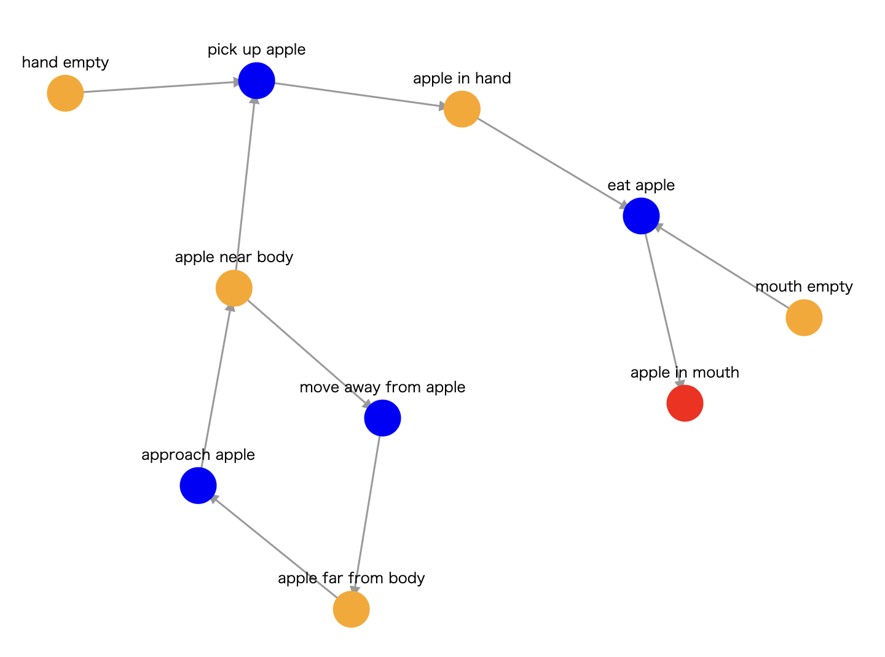

- 赤ノード：最初に起点となる環境（タスクから生成される環境）
- オレンジノード：環境
- 青ノード：行動

STEP2の例：オブジェクトに関連するタスクの生成
3回ネットワークを構築しますが、3回とも所定のオブジェクトに変更はありません。
オブジェクトに関連するタスクは、3回とも異なるものを作成してください。
以下に例を示します。
- オブジェクト"apple"に対して、タスク"eat apple"
- オブジェクト"apple"に対して、タスク"put down apple on desk"
- オブジェクト"water"に対して、タスク"pour water into cup"
STEP3の例と注意点：最初の環境aの作成
最初の環境aに対しては、以下のものを用いないでください。
- --- in hand
- --- near body
- --- far from body
- --- in existence
以下に例を示します。
- タスク"eat apple"を実行することで、環境"apple in hand"が達成される
- タスク"put down apple on desk"を実行することで、環境"apple on desk"が達成される
- タスク"pour water into cup"を実行することで、環境"water in cup"が達成される
STEP4の例：環境aを達成するための行動Aの作成
以下に例を示します。
- 環境"apple in hand"を達成するためには、行動"pick up apple"が必要
- 環境"apple near body"を達成するためには、行動"approach apple"が必要
- 環境"apple far from body"を達成するためには、行動"move away from body"が必要
- 環境"apple in mouth"を達成するためには、行動"eat apple"が必要
- 環境"apple on desk"を達成するためには、行動"put down apple on desk"が必要
- 環境"water in cup"を達成するためには、行動"pour water into cup"が必要
STEP5の例と注意点：行動Aを実行するために必要な環境c,dの作成
STEP3で禁止していた"in hand"等の制約はないため、それらを用いて構いません。
行動Aを実行するために必要な環境の個数は任意で、0個でも構いません。", "で区切って記入してください。
以下に例を示します。
- 行動"pick up apple"を実行するためには、環境"hand empty, apple near body"が必要
- 行動"approach apple"を実行するためには、環境"apple far from body"が必要
- 行動"move away from body"を実行するためには、環境"apple near body"が必要
- 行動"eat apple"を実行するためには、環境"apple in hand, mouth empty"が必要
- 行動"put down apple on desk"を実行するためには、環境"apple in hand, desk near body"が必要
- 行動"pour water into cup"を実行するためには、環境"cup empty, cup in hand, water in hand"が必要